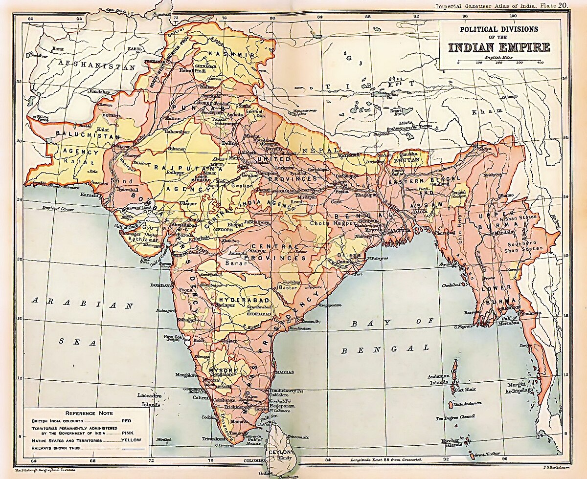

Provinces of British India (1907)
| Major Provinces |
 |
| Assam Province |
130000 |
6 |
Chief Commissioner |
| Bengal Presidency[b] |
390000 |
75 |
Lieutenant-Governor |
| Bombay Presidency |
320000 |
19 |
Governor-in-Council |
| Central Provinces and Berar |
270000 |
13 |
Chief Commissioner |
| Madras Presidency |
370000 |
38 |
Governor-in-Council |
| Punjab[c] |
250000 |
20 |
Lieutenant-Governor |
| United Provinces |
280000 |
48 |
Lieutenant-Governor |
| Minor Provinces |
| Ajmer-Merwara |
7000 |
477 |
ex offcio Chief Commissioner |
| Andaman and Nicobar Islands |
78000 |
25 |
Chief Commissioner |
| Coorg Province |
4100 |
181 |
ex offcio Chief Commissioner |